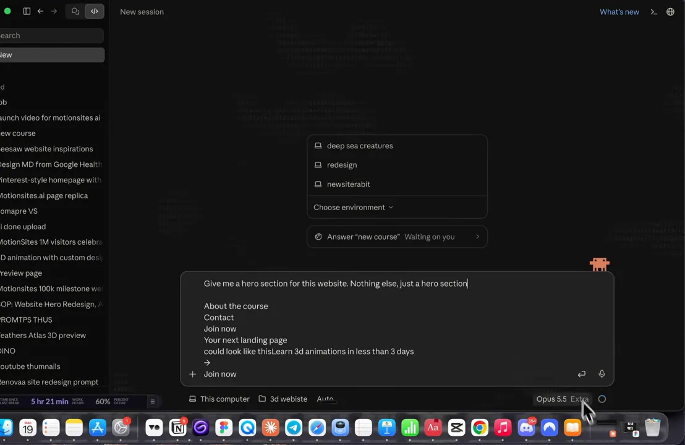
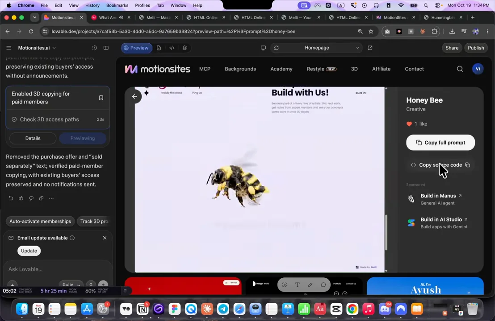
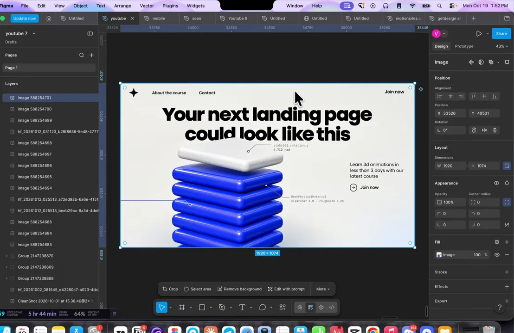
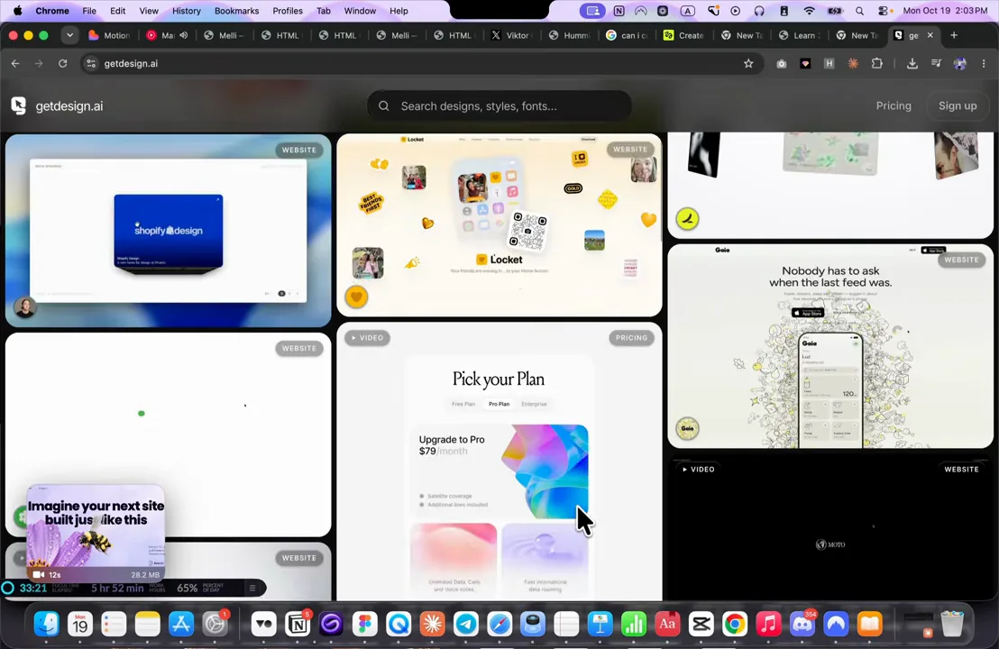
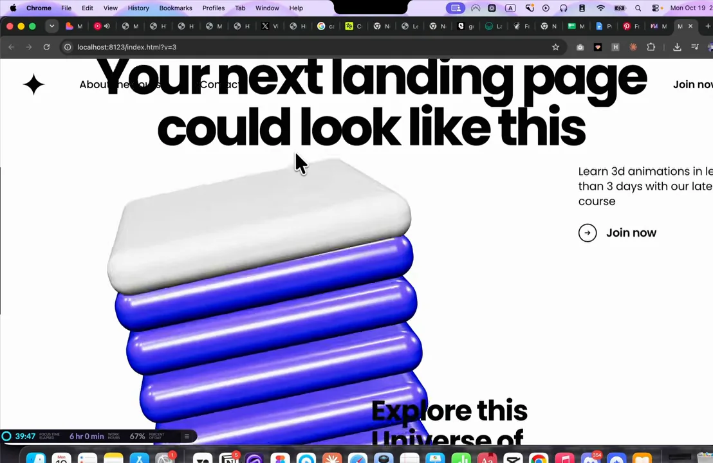
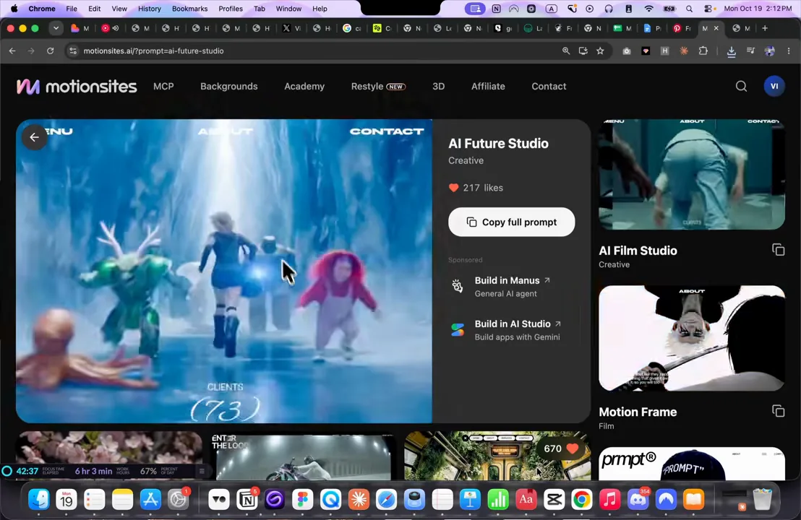
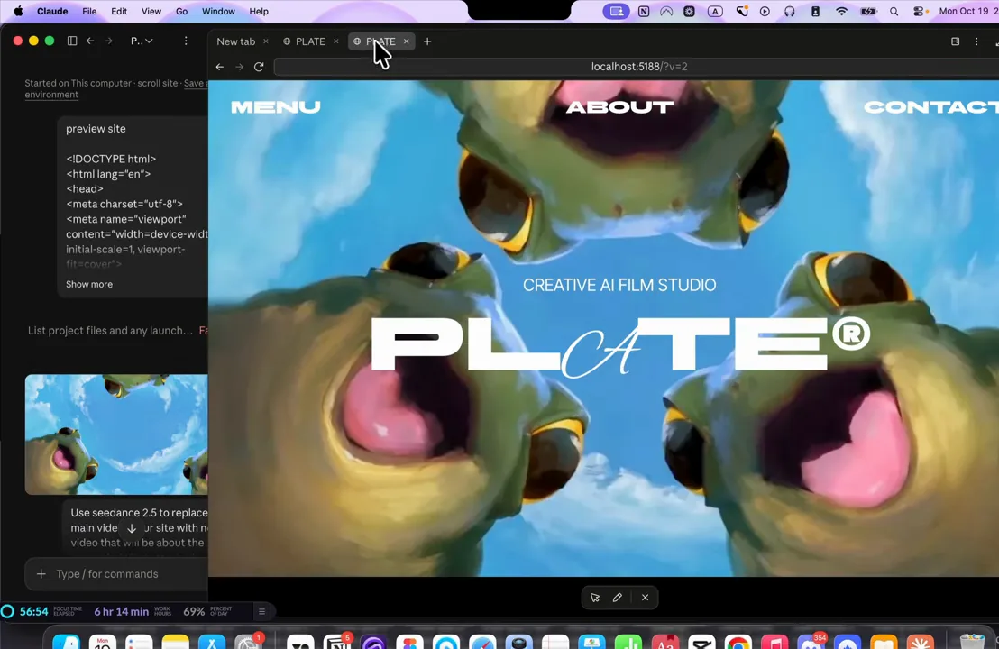
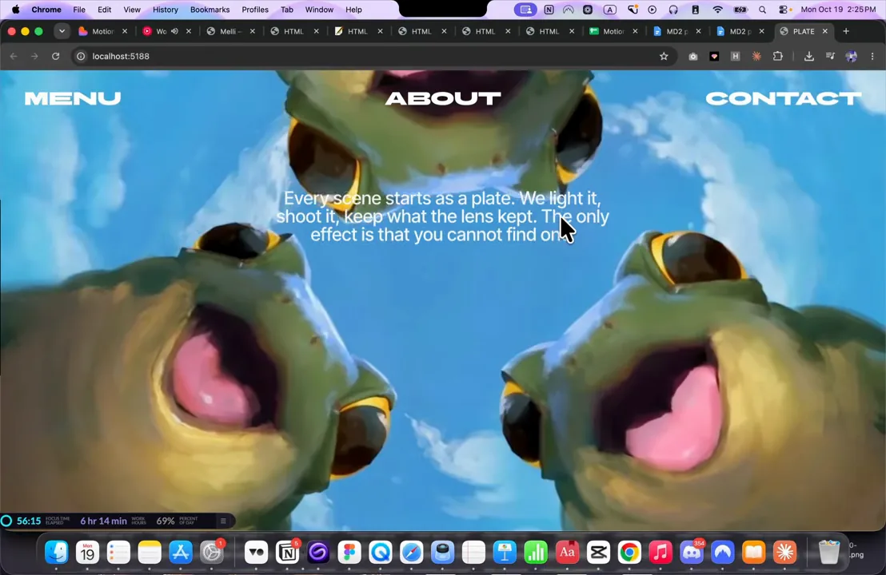
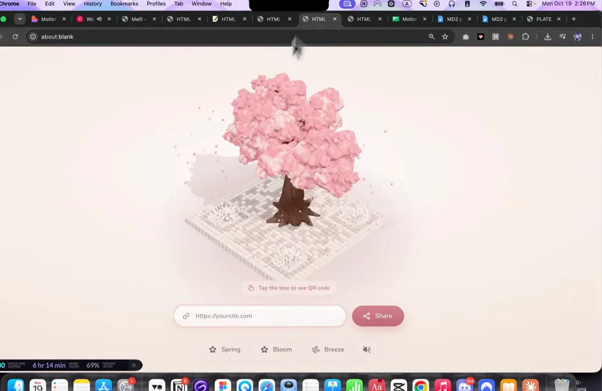
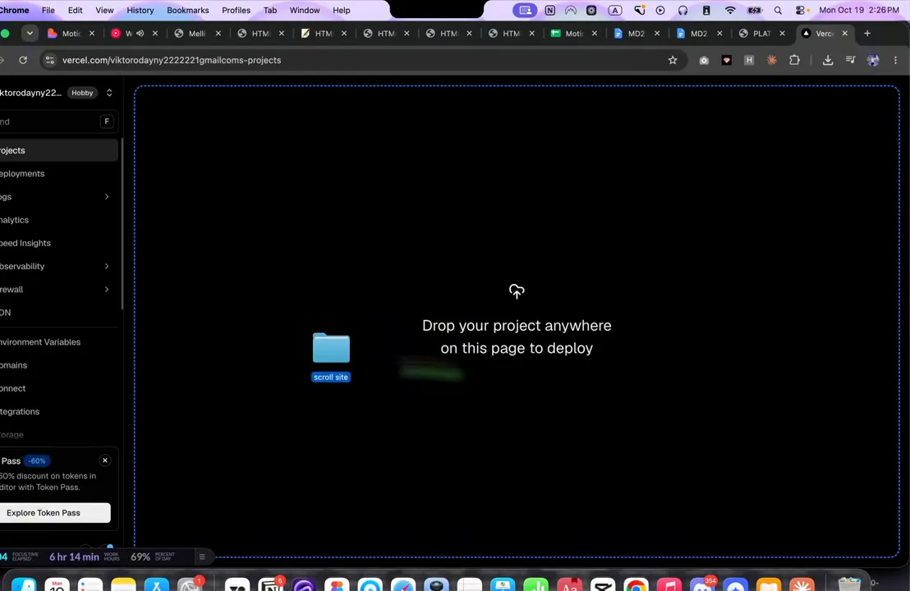

같은 AI인데 결과가 다른 이유
발표자는 몇 달 동안 AI로 웹사이트를 100개 넘게 만들었다고 소개해요. 그리고 디자이너가 Figma에 앉아 픽셀을 옮기던 시대는 끝났다고 말해요. 고객이 돈을 내는 건 예쁜 시안이 아니라 문제를 풀어 주는 일이고, AI 덕분에 디자이너가 그보다 훨씬 많은 걸 해 줄 수 있게 됐다는 주장이에요.
영상은 결과물 두 개를 나란히 놓고 시작해요. 왼쪽 'SLOP' 화면은 AI에게 그냥 웹사이트를 만들어 달라고 했을 때 나오는 페이지예요. 보라색 그라데이션 위에 'Ship products that think for themselves' 같은 흔한 문구가 있어요. 오른쪽 'FIXED' 화면은 같은 AI로 몇 단계를 더 거친 페이지로, 해바라기와 벌새가 들어간 밝은 히어로 섹션이에요.

실습은 Claude 데스크톱 앱에서 '3d website' 폴더를 새로 만들고 시작해요. 기존 사이트의 문구(About the course, Contact, Join now 등)만 복사해 붙이고 "Give me a hero section for this website. Nothing else, just a hero section."이라고 적어요. 모델 선택 칸에는 Opus 5.5가 보여요. 아무 안내 없이 한 줄로 뭐가 나오는지 먼저 확인하려는 거예요.

영상 전체 흐름
영상은 방법 두 가지를 보여 줘요. 첫째는 Claude 초안을 레퍼런스 이미지로 다듬고, 화면 녹화로 나머지 페이지를 채우는 방법이에요. 둘째는 핀터레스트 이미지와 다른 사이트의 프롬프트를 섞고, 영상 생성 모델로 메인 영상을 바꾸는 방법이에요. 둘 다 끝은 Vercel 배포예요.
| 도구 | 영상에서 맡은 일 |
|---|---|
| Claude (Opus 5.5) | 히어로 섹션과 나머지 페이지 코드를 써요 |
| Figma 안의 GPT(Generative Pre-trained Transformer) 이미지 | 초안과 레퍼런스를 섞어 목표 이미지를 그려요 |
| getdesign.ai, Land-book | 레이아웃 레퍼런스를 찾아요 |
| 핀터레스트 | 사이트에 쓸 그림 소재를 찾아요 |
| Seedance 2.5 | 그림을 바탕으로 메인 영상을 새로 만들어요 |
| Vercel | 완성한 폴더를 끌어다 놓아 배포해요 |
히어로 섹션을 레퍼런스 이미지로 다듬기
발표자가 꼽은 '세 가지 차이'는 슬라이드 한 장에 정리돼 있어요. 왼쪽부터 01 해바라기 사진 카드는 히어로 이미지, 02 벌새 카드는 3D 물체, 03 검은 카드는 정확한 프롬프트예요. 세 번째 카드에는 'font: Poppins 800', 'headline: 2 lines, centred', 'bird: hover, follow cursor' 같은 지시가 적혀 있어요.

이런 프롬프트는 발표자가 운영하는 프롬프트 모음 사이트에 무료로 올라가 있어요. 가입이나 결제 없이 꿀벌 예시(Honey Bee)의 오른쪽 'Copy full prompt' 버튼으로 복사하면 돼요. 영상을 따라 하는 동안 같은 프롬프트로 만들어 볼 수 있게 한 거예요.

첫 결과와 레퍼런스 이미지 만들기
맨손 프롬프트로 받은 첫 결과는 이래요. 왼쪽에 'Your next landing page could look like this.'가 네 줄로 쌓이고, 오른쪽에 파란 슬랩을 겹친 3D 물체가 떠 있어요. 물체 옆에는 'slab[0].rotation.y' 같은 작은 기술 라벨이 붙어 있어요. 발표자는 이 상태가 "꽤 AI가 만든 티가 난다"고 평가해요.

고치는 방법은 이미지 생성 모델을 한 번 거치는 거예요.
- 마음에 드는 레퍼런스 사이트를 캡처해요 — 영상에서는 꽃 위의 꿀벌 히어로예요.
- Claude가 만든 첫 결과도 캡처해요
- 두 장을 이미지 생성 모델에 넣어요 — 발표자는 유료 구독 중인 Figma 안에서 GPT 이미지 기능을 써요. ChatGPT 이미지로 해도 된다고 해요. 프롬프트는 "첫 번째 이미지처럼 만들되, 새와 스타일은 두 번째 이미지로 바꿔 줘"예요. 레퍼런스의 배치에 파란 슬랩 물체가 들어간 이미지가 나와요
나온 이미지는 Figma 캔버스에서 바로 볼 수 있어요. 큰 두 줄 제목이 가운데 오고, 그 아래 슬랩 더미가 놓이고, 오른쪽에 짧은 문구와 'Join now' 버튼이 붙었어요. 발표자는 Claude의 첫 결과보다 훨씬 낫다고 말해요.

이미지를 Claude에게 돌려주기
이제 그 이미지를 Claude 채팅에 붙여 넣고 "글꼴을 이 이미지에 맞추고, 모든 요소의 위치도 이 이미지처럼 해 줘. 이 디자인이 우리 것보다 훨씬 좋아"라고 보내요. 브라우저에서 확인한 결과는 Figma 이미지와 거의 같은 배치예요. 발표자는 겹치는 부분(overlay) 하나만 손보면 된다고 해요.

기다리는 동안 발표자는 반응형 이야기도 해요. Framer나 Webflow로 만들 때는 모바일 화면을 손으로 따로 맞춰야 했어요. 지금은 AI가 처음부터 모바일까지 맞춰 만들어 줘서, 100개 넘는 사이트를 만들면서 모바일 버전을 따로 요청한 적이 없다고 해요.
화면 녹화 한 편으로 나머지 페이지 만들기
히어로 아래쪽은 글로 설명하지 않고 영상으로 보여 줘요. 레퍼런스 사이트를 처음부터 끝까지 스크롤하는 모습을 화면 녹화하면, Claude가 그 영상에서 내용과 전환 효과를 읽어 내요. 발표자는 이 방식으로 페이지 전체를 프롬프트 하나로 만든다고 해요.
아래 화면 왼쪽 아래 입력창을 보면 MP4(MPEG-4 Part 14) 녹화 파일이 첨부돼 있고, 그 밑에 지시가 적혀 있어요. 위쪽에는 Claude가 앞 단계에서 만든 내용을 정리한 목록(Nav, Headline, 3D object, Labels 등)이 있고, 오른쪽 미리 보기에는 지금까지 만든 히어로가 떠 있어요.

Do not add any new assets, any new backgrounds. Just keep the background pure white.
새 에셋이나 새 배경은 넣지 말고, 배경은 그냥 순백으로 둬.
— 영상 04:33
이 한 줄이 중요한 이유는 Claude가 녹화 영상 속 배경과 이미지까지 따라 만들려 하기 때문이에요. 무엇을 따라 하고 무엇을 하지 말지를 함께 적어 줘야 히어로와 어울리는 결과가 나와요.
레퍼런스는 어디서 찾나요
발표자가 즐겨 쓰는 곳은 getdesign.ai예요. 화면에는 웹사이트와 앱 디자인 카드가 격자로 펼쳐져 있고, 위에 디자인·스타일·글꼴 검색창이 있어요. 마음에 드는 디자인의 'DESIGN.md' 파일을 받거나, 그냥 사이트 화면을 레퍼런스로 쓰면 된다고 해요.

또 다른 곳은 Land-book이에요. 다만 레퍼런스는 레이아웃과 내용 배치만 참고하는 용도라고 선을 그어요. 가격표 구조를 그대로 가져오더라도 가격은 내 것으로 바꾸고, 브랜드도 바꿔야 복제품처럼 보이지 않아요.
결과
새로 고침한 페이지는 스크롤에 맞춰 움직여요. 아래 화면은 스크롤을 조금 내린 순간이에요. 슬랩 더미가 크게 다가오고, 아래에서 'Explore this Universe of…'로 시작하는 다음 구역이 올라오고 있어요. 위쪽 제목이 메뉴와 겹치는 부분은 아직 손봐야 할 곳이에요.

발표자는 내용은 나중에 얼마든지 바꿀 수 있고, 모바일에서도 별도 작업 없이 물체가 튀어나오듯 잘 동작했다고 해요. 여기까지가 첫 번째 방법이에요.
두 번째 방법: 핀터레스트 그림과 영상 생성
두 번째 방법은 처음부터 그림 소재를 정하고 들어가요. 핀터레스트를 둘러보다 마음에 드는 그림을 골라, 내 브랜드에 맞게 바꿔 쓰는 거예요. 발표자는 파란 하늘을 배경으로 개구리들이 아래에서 올려다보는 'Frogs'라는 핀을 골랐어요. 화면 위쪽 'Image copied' 알림이 이미지를 복사한 순간이에요.

발표자는 핀터레스트 그림 중 상당수가 AI로 만든 것이라고 해요. 그리고 AI 생성물은 저작권 보호를 받지 않으니 브랜드에 쓰든 팔든 자유롭고, 확실하지 않으면 AI로 만든 건지 물어보면 된다고 말해요.
그림 + 사이트 프롬프트 + 영상 생성
그다음 Claude에서 새 채팅을 열고 개구리 그림을 붙여 넣어요. 여기에 프롬프트 모음 사이트의 'AI Future Studio' 예시 프롬프트도 붙여요. 발표자는 이 사이트의 전환 효과와 글꼴, 그리고 내용이 차례로 드러나는 방식이 마음에 들었다고 해요. 스크롤에 맞춰 움직이는 애니메이션 사이트를 원했던 거예요.

마지막으로 "Seedance 2.5로 사이트의 메인 영상을, 방금 첨부한 이미지에 관한 새 영상으로 바꿔 줘"라고 덧붙여요. Seedance 2.5는 ByteDance의 영상 생성 모델이에요. 발표자는 Claude에 Seedance 2.5를 연결해 주는 서비스가 여러 곳이라 마음에 드는 걸 고르면 된다고 해요. ByteDance 공식 서비스, OpenArt, Higgsfield 같은 곳을 예로 들어요.
결과 화면 왼쪽 아래에 그 지시('Use seedance 2.5 to replace main video…')와 개구리 그림이 보여요. 오른쪽 미리 보기는 'PLATE'라는 가상의 AI 영상 스튜디오 사이트예요. 원래 사이트의 'MENU, ABOUT, CONTACT' 메뉴 배치는 그대로이고, 배경이 개구리 영상으로 바뀌었어요.

스크롤을 내리면 영상 위로 문장이 한 줄씩 드러나요. 'Every scene starts as a plate.'로 시작하는 문구예요. 원래 예시 사이트의 내용 공개 방식이 그대로 살아 있어요.

원샷 결과물과 배포, 요금
발표자는 지금까지 보여 준 결과가 완성품이 아니라고 여러 번 말해요. 모두 프롬프트 한 번으로 나온 원샷 결과라는 거예요. 시간을 조금만 더 쓰면 영상 처음에 보여 준 수준까지 충분히 갈 수 있다고 해요.
다른 원샷 예시도 몇 개 보여 줘요. 아래는 링크를 넣으면 QR(Quick Response) 코드를 만들어 주는 사이트예요. 분홍 벚꽃 나무가 미로 모양 받침 위에 서 있고, 아래에 주소 입력칸과 'Share' 버튼이 있어요. 이 밖에 우주 느낌의 'Lumora', 빨간 배경에 잉어가 헤엄치는 'Craft' 사이트도 지나가요.

Vercel로 배포하기
- Claude에게 미리 보기 폴더를 열어 달라고 해요 — Finder에서 프로젝트 폴더가 열려요.
- Vercel 프로젝트 화면에 그 폴더를 끌어다 놓아요 'Drop your project anywhere on this page to deploy' 안내가 뜨고, 놓으면 배포가 시작돼요
아래 화면이 바로 그 순간이에요. 가운데 파란 폴더 아이콘('scroll site')을 끌어 오자 Vercel 화면 전체가 놓을 자리로 바뀌었어요. 발표자는 이렇게 하면 무료로, 내 도메인에서도 사이트를 띄울 수 있다고 해요.

Claude 요금
마지막으로 Claude 요금제 페이지를 보여 줘요. 가운데 Pro는 연간 결제 시 월 17달러(월마다 결제하면 20달러), 오른쪽 Max는 월 100달러부터예요. 발표자는 Max를 쓰지만, Pro로도 일주일에 사이트 몇 개는 충분히 만든다고 해요. 사용량은 몇 시간마다 다시 채워져서 문제 될 일이 없었다고 덧붙여요.

발표자의 마지막 말은 계속 연습하라는 거예요. 연습하지 않으면 AI에게 대체되지만, 달마다 좋아지는 AI 모델을 따라가면 앞자리에 설 수 있다고 해요.